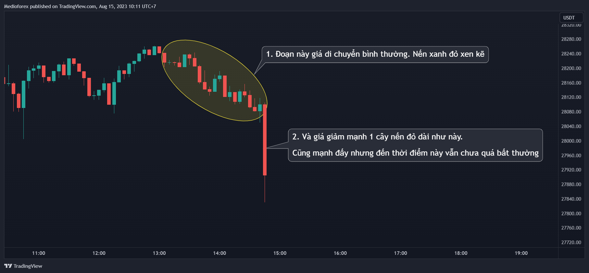
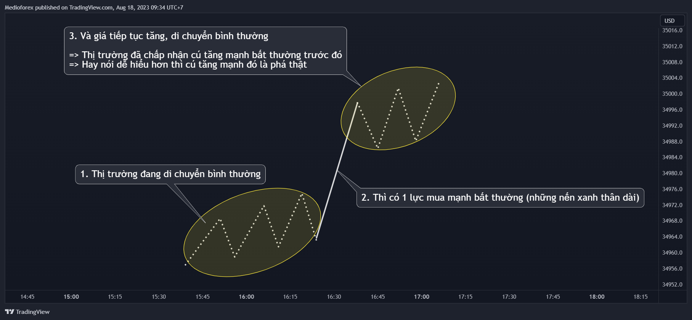
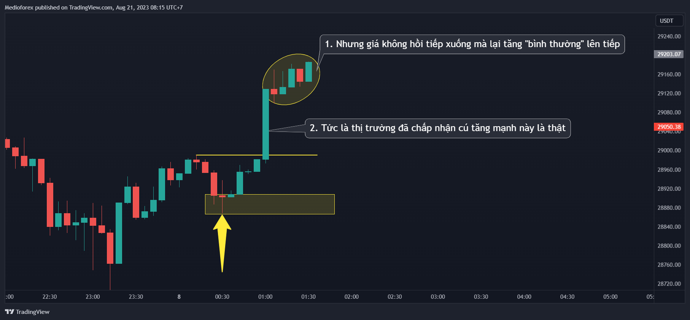

Chào các bạn, đây là bài mình nói chi tiết về Cấu Trúc Thị Trường cũng như cách thị trường chuyển động (trong con mắt của mình).
Bài này mình sẽ viết chi tiết, kỹ càng hơn về cách thị trường di chuyển, từ đó bổ trợ tốt hơn cho bài “Tất tần tật keylevel quan trọng từ A-Z” 76. Nói trước là nó sẽ khá dài nên nên bạn chịu khó đọc lúc đầu chút xíu nhé.
Và đây là 1 trong những bài nên đọc đầu tiên khi vào trong hội quán. Giờ thì…
Bắt đầu nhé
Trong bài “Tất tần tật keylevel quan trọng từ A-Z” mình có viết: Thị trường chỉ có 2 dạng di chuyển là: Di chuyển dứt khoát và di chuyển giật cục nhấp nhả ruộng bậc thang. Bài này mình sẽ tập trung nói về 2 dạng di chuyển đó. Khi hiểu rõ thì chúng ta tìm, xác định keylevel quan trọng sẽ chính xác hơn rất nhiều.
Chúng ta đều biết phần lớn thời gian thị trường di chuyển là đi ngang, nếu di chuyển có xu hướng thì đa phần thời gian cũng là chạy theo kiểu nhấp nhả như nến xanh đỏ xen kẽ, ruộng bậc thang. Chỉ có 1 phần nhỏ thời gian là giá chuyển động mạnh và dứt khoát thôi.
-
Vì thế mà cái kiểu di chuyển nhấp nhả, nến xanh đỏ xen kẽ, ruộng bậc thang là cái kiểu di chuyển phổ biến thường gặp nhất và nó là kiểu di chuyển khi thị trường bình thường (Di chuyển bình thường).
-
Còn kiểu di chuyển mạnh dứt khoát là kiểu di chuyển ít gặp, kiểu di chuyển không phổ biến và nó là kiểu di chuyển không như bình thường (Di chuyển mạnh bất thường)
 Từ nguyên lý trên thì để tiếp cận, giải thích vấn đề cũ 1 cách dễ hiểu hơn với những người còn chưa hiểu thì mình sẽ gọi cái kiểu di chuyển nhấp nhả, nến xanh đỏ xen kẽ ruộng bậc thang là kiểu thị trường di chuyển bình thường của thị trường, còn kiểu di chuyển mạnh dứt khoát ít gặp là kiểu di chuyển mạnh bất thường.
Từ nguyên lý trên thì để tiếp cận, giải thích vấn đề cũ 1 cách dễ hiểu hơn với những người còn chưa hiểu thì mình sẽ gọi cái kiểu di chuyển nhấp nhả, nến xanh đỏ xen kẽ ruộng bậc thang là kiểu thị trường di chuyển bình thường của thị trường, còn kiểu di chuyển mạnh dứt khoát ít gặp là kiểu di chuyển mạnh bất thường.
Với cách diễn đạt này mình tin sẽ dễ hiểu hơn trước giúp những bạn chưa hiểu, hoặc trước hiểu chưa rõ sẽ rõ ràng hơn, từ đó tự tin hơn khi nhận định.
Giờ cùng mình bắt đầu phân tích, làm rõ từng dạng di chuyển một nhé
I. Di chuyển bình thường
Giá di chuyển bình thường ở trong 1 xu hướng tăng là giá vừa phá cái đỉnh thì ngay lập tức sau đó nó quay trở lại retest và nó cứ liên tục lặp đi lặp lại như thế.
Tại sao mình gọi đó là di chuyển bình thường?
Như mình đã nói ở trên thì đó là dạng di chuyển chiếm phần lớn thời gian của thị trường. Đó là cái chúng ta nhìn bằng mắt thấy được ngay, mà thường cái gì có nhiều nhất thì cái đó trở thành cái bình thường trong môi trường, xã hội đó.
Thêm 1 lý do nữa là khi thị trường đã có sự ổn định, đã bình thường thì khi đó phe mua và phe bán sẽ gần như bằng nhau, hay có thể nói là lượng cung và lượng cầu tương đương nhau. Lúc này thì giá rất ít khi di chuyển.
Nếu có sự di chuyển, giả sử mỗi khi giá có tăng thì thời điểm đó phe muốn bán sẽ nhiều hơn phe muốn mua nên nếu thị trường vẫn còn tính ổn định thì ngay sau đó giá sẽ bị đẩy xuống để phe mua và phe bán lại về "điểm cân bằng mới’.
Đấy là góc nhìn cá nhân của mình. Vẽ trên biểu đồ giản đơn thì như thế còn trên biểu đồ nến thì hình ảnh nến được biểu thị bằng 2 dạng sau:
1. Dạng di chuyển nến xanh đỏ xen kẽ hoặc râu cây nến trước chạm râu cây nến sau
Nhớ là đừng máy móc đếm nến mà hãy hiểu bản chất của nó. Bản chất của nó là giá vừa phá đỉnh thì ngay lập tức quay trở lại retest rồi đi lên tiếp và nó lặp đi lặp lại như vậy.
Hãy hình dung đường giá đã chạy từ 2 biểu đồ nến trên thì sẽ thấy 2 biểu đồ trên nó đều là như này
Lưu ý trong đọc nến
Nếu bạn gặp 1 biểu đồ nến kiểu như này
Nếu bạn gặp biểu đồ như trên thì hãy lưu ý nó vẫn chỉ là dạng di chuyển bình thường nhé. Vẫn là giá vừa phá đỉnh thì quay trở lại retest ngay rồi lên tiếp.

Khi đọc nến thì chúng ta hay đọc kiểu máy móc là sau cây nến phá đỉnh thì cây nến sau đó phải quay trở lại ngay thì mới được gọi là “vừa phá rồi quay trở lại ngay”. (Mình trước cũng máy móc vậy).
Nhưng không, đó là kiểu đọc nến máy móc. Bản chất của vấn đề thì vẫn là giá vừa phá rồi quay trở lại retest ngay. Chỉ có là hình ảnh nến biểu thị hiện tượng đó trong trường hợp này nó hơi khác so với những trường hợp mà chúng ta hay gặp mà thôi, hình ảnh hơi khác nhưng hiện tượng vẫn chỉ là 1, bản chất của nó như nhau (Giải thích kỹ càng thì mình đã viết nó trong bài Mưu hèn 11, nếu chưa rõ thì bạn hãy đọc bài đó nhé).
2. Dạng di chuyển ruộng bậc thang
Những đoạn nến xanh đỏ xen kẽ mà bạn xuống timeframe nhỏ hơn để xem cái đoạn xanh đỏ xen kẽ đó thì biểu đồ sẽ là hình ruộng bậc thang.
Từ đó suy ra bản chất của nến xanh đỏ xen kẽ hay ruộng bậc thang là giống hệt nhau nhưng do nhìn ở những khung thời gian khác nhau nên hình ảnh biểu thị khác nhau chứ nội dung thì như nhau.
Ý nghĩa của việc giá di chuyển bình thường
Ngay cái tên “Di chuyển bình thường” thì đã nói lên ý nghĩa của nó. Có rất nhiều ý nghĩa mà bạn có thể suy ra như giá di chuyển bình thường thì thường sẽ không tạo ra cản mạnh. Nhưng ý nghĩa, hệ quả quan trọng nhất của nó mình nghĩ là:
Khi giá “di chuyển bình thường” có nghĩa là thị trường đã chấp nhận những hiện tượng phía trước đó là thật. Chấp nhận thì giá mới tiếp tục di chuyển bình thường, chứ không chấp nhận là nó phản ứng lại mạnh rồi.
Giải thích cho hệ quả này thì mình lấy 1 cái ví dụ như này
Giá tăng mạnh đến như vậy có thể có nhiều nguyên nhân như có bàn tay cá mập đẩy giá, hoặc có tin tức tốt làm cộng đồng fomo hoặc 1 lý do gì đó khác hay ho hơn nữa. Nhưng dù nguyên nhân sau cú tăng giá mạnh đó là gì thì chưa chắc cú tăng mạnh đó đã là thật.
Sau cú tăng mạnh đó mà giá giảm luôn thậm chí giảm mạnh hơn, cắm mỏ là rất bình thường
Nhưng nếu sau cú giá tăng mạnh mà giá vẫn tiếp tục tăng với kiểu di chuyển bình thường
Thì có nghĩa là thị trường đã chấp nhận việc giá tăng mạnh trước đó là thật. Chấp nhận thì giá mới tăng bình thường lên tiếp.
 Với ý nghĩa này sẽ giúp bạn xác định keylevel quan trọng tốt hơn việc dùng quy tắc đếm nến để xác định phá vỡ thật, phá vỡ giả.
Với ý nghĩa này sẽ giúp bạn xác định keylevel quan trọng tốt hơn việc dùng quy tắc đếm nến để xác định phá vỡ thật, phá vỡ giả.
II. Di chuyển mạnh bất thường
Di chuyển mạnh bất thường đơn giản chỉ là kiểu di chuyển còn lại không phải kiểu di chuyển bình thường.

Đấy là biểu thị trên biểu đồ giản đơn còn trên biểu đồ nến thì nó cũng có 2 hình dạng.
1. Chỉ có nến không rõ cấu trúc đỉnh đáy

2. Di chuyển thấy cấu trúc rõ đỉnh đáy
Những chỗ mà không rõ cấu trúc đỉnh đáy mà bạn xuống khung nhỏ hơn sẽ thấy cấu trúc đỉnh đáy. Tương tự như trên thôi.
Lưu ý
Nhớ luôn luôn kiểm tra ở timeframe nhỏ hơn rồi mới kết luận nhé.
Nếu bạn đang nhìn ở khung m15 và cho rằng khúc đó là di chuyển mạnh bất thường thì cần phải xuống khung nhỏ hơn là m5 để kiểm tra lại rồi mới kết luận.
Đây là cái quan trọng vì những thứ chúng ta nhìn ở 1 khung thời gian chưa chắc đã là sự thật nên phải nhìn thêm 1 khung nhỏ hơn rồi mới đưa ra kết luận.
Ý nghĩa
Khi giá đang di chuyển bình thường mà đột ngột di chuyển mạnh bất thường và thị trường chấp nhận sự bất thường đó bằng việc giá tiếp tục di chuyển bình thường.

Thì có nghĩa lực mạnh bất thường đó đã được công nhận và đó chính là căn cứ mạnh nhất cuối cùng của phe mua. Nói cách khác, đó chính là keylevel quan trọng.
Hay mình viết là
Khi đó khả năng cao giá sẽ quay trở lại để retest trước khi lên tiếp
 Tổng kết
Tổng kết
Trong con mắt của mình thì tất cả biểu đồ chúng ta nhìn loanh quanh cũng chỉ được cấu tạo từ 2 dạng di chuyển, đó là: di chuyển bình thường và di chuyển mạnh bất thường.
Khi bạn hiểu kỹ 2 dạng di chuyển này và hình dung được đường giá đã chạy như nào thì việc tìm keylevel quan trọng sẽ tốt và chính xác hơn rất nhiều.
Vậy keylevel quan trọng được tạo thành như nào thì cùng mình tiếp tục bài viết này nhé.
III. Cách keylevel quan trọng được tạo thành
Theo định nghĩa chung thì keylevel quan trọng là nơi cuối cùng có lực mua bán mạnh nhất.
Và ở bài “Tất tần tật về keylevel quan trọng từ A-Z” 76 mình cũng nói “keylevel quan trọng được tạo thành từ việc giá di chuyển mạnh dứt khoát”
Nó đúng nhưng chưa chi tiết và chưa thật sự đủ để 1 người chưa hiểu có thể hiểu và áp dụng vào biểu đồ nến. Nếu bạn chưa hiểu thì thử nhìn nó dưới góc độ cách thị trường chuyển động để tìm keylevel quan trọng nhé.

Từ đây sẽ thấy có 2 yếu tố để xác định keylevel quan trọng.
- Giá đang di chuyển bình thường thì tăng mạnh
- Và thị trường chấp nhận việc giá tăng mạnh trước đó bằng việc giá tiếp tục di chuyển bình thường. (Chấp nhận đó là phá thật)
Đi vào 1 ví dụ bằng biểu đồ nến nhé
Gặp những trường hợp kiểu như trên thì dễ xác định. Khi chưa thạo thì chỉ nên trade, xuống tiền khi gặp những trường hợp dễ xác định như vậy thôi. Còn những trường hợp phức tạp, rắc rối hơn thì cứ từ từ. Đôi khi không vào lệnh cũng là 1 cách để phát triển tài khoản.
Trước mắt hãy hiểu thật rõ 2 dạng di chuyển của thị trường và nhớ 2 yếu tố để xác định keylevel quan trọng là dần dần bạn sẽ khám phá, tích lũy kinh nghiệm ở những trường hợp khó hơn khác. Nhớ đừng xuống tiền ở những trường hợp mình còn chưa rõ.
IV. Một nghìn lẻ một lưu ý
Mình chỉ viết 2 lưu ý theo mình là quan trọng nhất ở thời điểm hiện tại, 999 lưu ý còn lại thì bạn hãy tự viết nó cho riêng mình nhé chứ mình giật cái title đấy cho hoành tí thôi 
1. Lưu ý quan trọng 1
Tại sao lại có như thế?
Giải thích vấn đề này mình đã giải thích trong 1 bài trong chuỗi bài “Mưu hèn kế bẩn Trading” rồi nhưng mình vẫn giải thích kỹ lại trong bài này bằng 1 ví dụ.
Giờ cùng mình bóc tách mọi thứ ở cái keylevel quan trọng có OB chưa sử dụng này nhé

Thị trường chấp nhận “lực tăng” mạnh trước đó là thật và thời điểm này keylevel quan trọng có OB chưa sử dụng đã được tạo thành.
Cái lực tăng mạnh tạo nên “keylevel quan trọng có OB chưa sử dụng” đó có thể xuất phát 1 tổ chức tài chính, hoặc do sự fomo từ 1 sự kiện nào đó trên thị trường. Và “lực tăng mạnh đó” ở trên biểu đồ nến được thể hiện ở 2 khúc
Tuy là thể hiện ra 2 khúc như vậy nhưng cả 2 khúc đó đều là từ cái “lực mạnh” đó, cái “hiện tượng” đó tạo nên.
Nếu bạn chưa hiểu thì có thể tưởng tượng cái lực mua mạnh đó là cái lò xo. Khi cái lò xo bật ra, phá cái đỉnh cũ thì quán tính mạnh của nó bật lên co lại tạo thành cái khoảng trống imbalance
Tức là OB chưa sử dụng và khoảng trống imbalance trên khối OB chưa sử dụng đều là từ cái lực mua mạnh đó tạo ra. Từ đây giải thích việc
Giá chỉ hồi về khoảng trống imbalance mà không về tới vùng màu vàng bên dưới mà đã đi lên phá đỉnh thì cũng là điều bình thường. Điều ấy cũng thể hiện việc giá đã quay lại retest cái “lực mua mạnh” và tiếp tục đi lên rồi. Vậy nên trong mắt mình
Đó là góc nhìn của mình để giải thích cho 2 cái ảnh đầu tiên ở phần Lưu ý 1 này. Nên nếu bạn đã đặt lệnh limit như này
Thì hãy xác định mình đã bị hụt kèo và nên xóa lệnh chờ đó đi
Đây là lưu ý quan trọng trong vấn đề retest. Nhiều khi giá đã quay lại để retest và đã đi tiếp rồi nhưng nếu bạn quên mất lưu ý này thì lại tưởng giá chưa retest keylevel quan trọng.
2. Lưu ý quan trọng 2
Hãy luôn nhớ 2 yếu tố để xác định keylevel quan trọng. Bỏ sót 1 cái thì có thể khiến bạn xác định sai sót. Mình lấy 1 vài biểu đồ giản đơn để thử cùng luyện tập nhé
- Biểu đồ dễ và cơ bản nhất trong xác định keylevel quan trọng
Khi trade mà gặp được biểu đồ này thì xác định keylevel quan trọng rất nhanh và nhàn đầu rồi.
- Một biểu đồ nâng cao hơn
Theo nguyên tắc mình đã xây dựng phía trên thì vùng màu vàng bên dưới mới là keylevel quan trọng còn cái bên trên thì không phải vì thiếu 1 trọng 2 yếu tố.
Xác định keylevel quan trọng như trên là dựa vào 2 yếu tố, dựa quy tắc có sẵn mình đã viết. Nhưng mình khuyên là nên rõ cả bản chất phía sau của nó thì mới thật sự hiểu từ đấy mới làm chủ quy tắc để mà xác định tốt cho những lần khác và cả những trường hợp khó hơn nữa.
Mình đã viết 1 bài giải thích về vấn đề này. Bạn có thể đọc nó ở bài Mưu hèn 10 nhé
Lưu ý quan trọng số 2 này nói về việc xác định keylevel quan trọng dựa vào 2 yếu tố mình đã viết. Tuy nhiên không nên áp dụng khi chưa hiểu rõ bản chất của nó. Hãy hiểu rõ bản chất trước rồi mới áp dụng nhé.
V. Tổng kết
Đó là toàn bộ những thứ mình muốn viết trong bài này. Bài viết tuy dài dễ gây tâm lý ngại đọc nhưng giá trị cô đặc thực ra lại khá ngắn.
Mình viết dài vì nó quan trọng nên cần viết kỹ để những bạn chưa hiểu, chưa rõ có thể hệ thống từ đó hiểu kỹ và rõ hơn.
Vì thế khi bạn đã hiểu rồi thì hãy hệ thống lại theo cách thật xúc tích, ngắn gọn với bạn nhé. Hiểu rồi thì tóm gọn lại chắc cỡ còn vài dòng thôi.
Bài này đến đây là quá dài rồi, hẹn gặp mọi người ở 1 bài khác và chúc mọi người thành công.